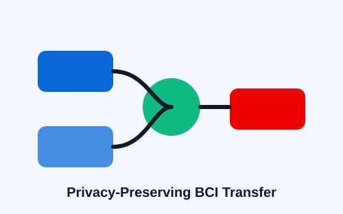

Multiple Model Transferability Ensemble Adaptation for Privacy-Preserving BCIs
Submitted to IEEE Transactions on Systems, Man, and Cybernetics: Systems (TSMC)
This work studies privacy-preserving cross-subject adaptation for EEG-based BCIs. It combines multiple source models and transferability-aware ensemble learning to improve target-subject performance without requiring direct access to raw source EEG data.